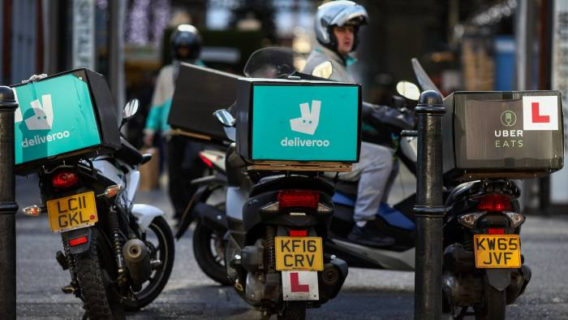

-
California Community Colleges launch Self-Employment Pathways in the Gig Economy Project
Ed Coghlan | California Economic Summit |
-
When Robots Take Our Jobs, Platform Cooperatives Are a Solution
Gideon Rosenblatt | Yes Magazine |
-
Loconomics Strikes Partnership with California Community Colleges
Jean Hagan | Institute for the Future |
-
Loconomics Gives Gig Workers an Alternative to Investor-Owned Platforms
Nithin Coca | Shareable |
-
Four platform co-ops that are making a change
Anthony Murray | Coop News |
-

How workers can profit by taking control of technology
Margaret Heffernan | The Financial Times |
-
A New Wrinkle in the Gig Economy: Workers Get Most of the Money
Amy Cortese | The New York Times |
-
Platform Cooperativism: contro il modello Uber, motivazioni e sfide di un nuovo mutualismo
Elena Taverna | Collaboriamo |
-
These New Co-op Apps Show How to Build Worker Power In the Age of Uber
Tom Ladendorf | In These Times |
-
4 ways freelancers are disrupting the on-demand economy
Laura Murphy | Freelancers Union |
-
Get ready for the worker-owned sharing economy
Amy Cortese | Cisco's The Network |
-
The True Sharing Economy
Zoe Oja Tucker | East Bay Express |
-
How Platform Coops Can Beat Death Stars Like Uber to Create a Real Sharing Economy
Neal Gorenflo | Shareable |
-
The People's Uber: Why The Sharing Economy Must Share Ownership
Trebor Scholz and Nathan Schneider | FastCompany CoExist |
-
The "Sharing Economy" is the Problem
Brian Van Slyke and David Morgan | Grassroots Economic Organizing |
-
5 Ways to Take Back Tech
Nathan Schneider | The Nation |
-
Sustaining hierarchy – Uber isn't sharing
Francesca Pick and Julia Dreher | Kings Review |
-
Owning Is the New Sharing
Nathan Schneider | Shareable |
-
The collaborative economy is for everyone
Fernanda Marin and Juho Makkonen | OuiShare |
-
Cooperatives give new meaning to sharing economy
Carolyn Said | San Francisco Chronicle |